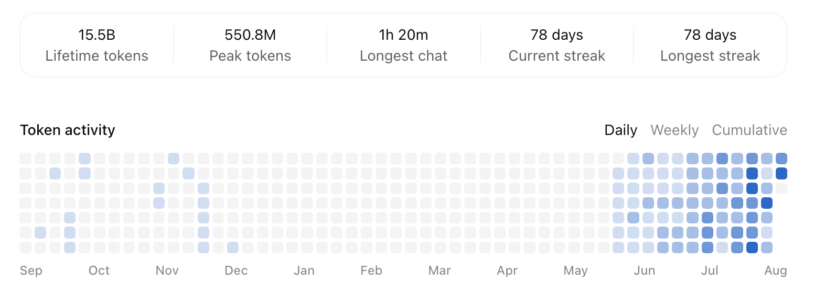
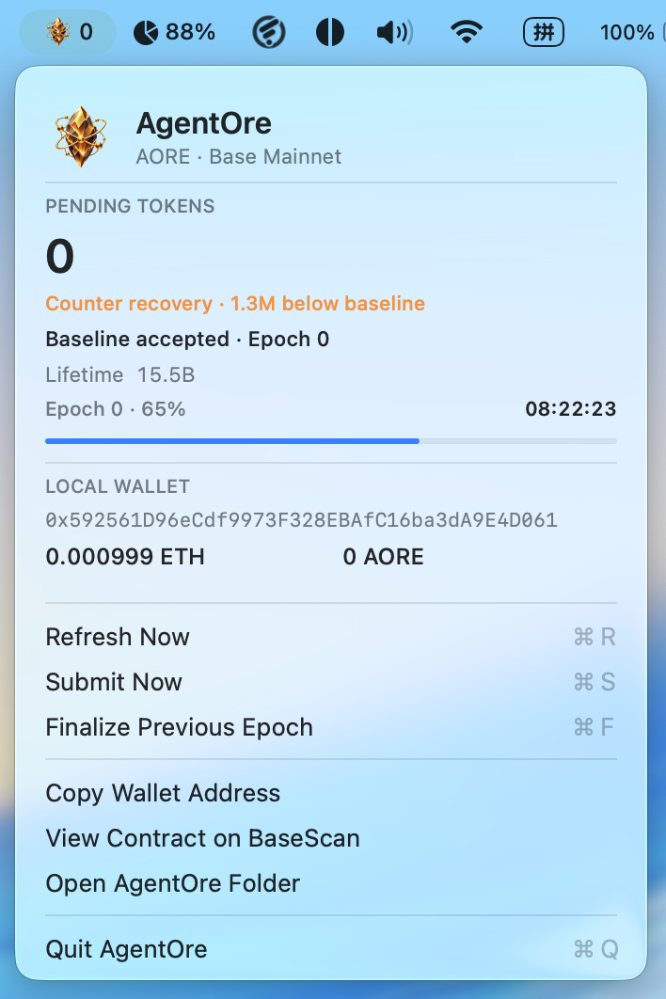

突发奇想，假如用 CodeX 里的 Token 消耗量用作某种挖矿的手段，怎么样？

目前的设计是：
形式上，miner 下载安装一个 Macos App，打开后会常住在 menu 区域，每天提交一次当天的 Token 消耗量（需要 Base 链上的 gas 费），根据概率获得代币：

GitHub 仓库地址：https://github.com/smallyunet/agentore
相关文章：